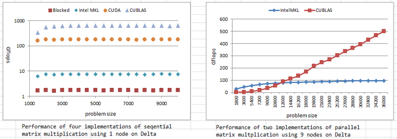
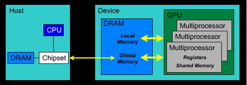
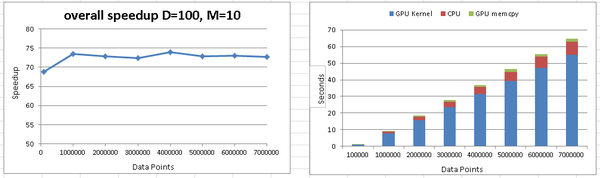

3. Delta GPU User Manual¶
FutureGrid’s Delta (delta.futuregrid.org), is a 16-node GPU cluster running Red Hat Linux, with TORQUE (also called PBS) and Moab for job management, and Module to simplify application and environment configuration. Delta consists of 16 nodes with two 6-core Intel X5560 processors at 2.8GHz, 192 GB of DDR3 memory, and 15TB of RAID5 disk storage. Each node supports 2 nVIDIA Tesla C2070 GPUs with 448 processing cores. For details on Delta’s hardware configuration, see the Delta page.
The FutureGrid delta cluster is accessible via a batch queue that is managed from india (india.futuregrid.org). To use delta interactively, first log into india:
ssh username@india.futuregrid.org
Then, on india, the following command lets you use one of the delta compute nodes:
qsub -I -q delta myprg
If you want to use delta with your job script, please use:
#PBS -q delta
to indicate that you’d like to use this queue.
For more details about how to manage queues with qsub, see the Delta manual page.
Utilization of GPU resources on Delta: #. Utilize GPU node `Running Program on single GPU
- Utilize GPU cluster Running MPI/CUDA program on the Delta cluster
- Utilize GPU cloud
- Mixing utilization of GPU and CPU
- Non-trivial service or applications using GPU
3.1. Running MPI/GPU program on the Delta cluster¶
GPUs provide the ability to use mathematical operations at a fraction of the cost and with higher performance than on the current generation of processors. FutureGrid provides the ability to test such an infrastructure as part of its delta cluster. Here, we provide a step-by-step guide on how to run a parallel matrix multiplication program using IntelMPI and CUDA on Delta machines. The MPI framework distributes the work among compute nodes, each of which use CUDA to execute the shared workload. We also provide the complete parallel matrix multiplication code using MPI/CUDA that has already been tested on Delta cluster in attachment.
MPI code: pmm_mpi.c:
#include <mpi.h>
void invoke_cuda_vecadd();
int main(int argc, char *argv[])
{
int rank, size;
MPI_Init (&argc, &argv); /* starts MPI */
MPI_Comm_rank (MPI_COMM_WORLD, &rank); /* get current process id */
MPI_Comm_size (MPI_COMM_WORLD, &size); /* get number of processes */
invoke_cuda_vecadd(); /* the cuda code */
MPI_Finalize();
return 0;
}
CUDA code: dgemm_cuda.cu:
#include <stdio.h>
__global__ void cuda_vecadd(int *array1, int *array2, int
*array3)
{
int index = blockIdx.x * blockDim.x + threadIdx.x;
array3[index] = array1[index] + array2[index];
}
extern "C" void invoke_cuda_vecadd()
{
cudaMalloc((void**) &devarray1, sizeof(int)*10);
cudaMalloc((void**) &devarray2, sizeof(int)*10);
cudaMalloc((void**) &devarray3, sizeof(int)*10);
cudaMemcpy(devarray1, hostarray1, sizeof(int)*10, cudaMemcpyHostToDevice);
cudaMemcpy(devarray2, hostarray2, sizeof(int)*10, cudaMemcpyHostToDevice);
cuda_vec_add<<<1, 10>>>(devarray1, devarray2, devarray3);
cudaMemcpy(hostarray3, devarray3, sizeof(int)*10, cudaMemcpyDeviceToHost);
cudaFree(devarray1);
cudaFree(devarray2);
cudaFree(devarray3);
}
Note: Mixing MPI and CUDA code may cause problems during linking because of the difference between C and C++ calling conventions. The use of extern “C” around invoke_cuda_code which instructs the nvcc (a wrapper of c++) compiler to make that function callable from the C runtime.
Compiling the MPI/CUDA program:
Load the Modules:
$ module load IntelMPI # load Intel MPI
$ module load Intel # load icc
$ module load cuda # load cuda tools
This will load the Intel MPI, the compiler, and the cuda tools. Next compile the code with:
$ nvcc -c dgemm_cuda.cu -o dgemm_cuda.o
$ mpiicc -o pmm_mpi.c -o pmm_mpi.o
$ mpiicc -o mpicuda pmm_mpi.o dgemm_cuda.o -lcudart -lcublas -L /opt/cuda/lib64 -I /opt/cuda/include
Note: The CUDA compiler nvcc is used only to compile the CUDA source file, and the IntelMPI compiler mpiicc is used to compile the C code and do the linking
Setting Up and Submitting MPI Jobs::
qsub -I -l nodes=4 -q delta # get 4 nodes from FG
uniq /var/spool/torque/aux/399286.i136
gpu_nodes_list #create machine file list
module load IntelMPI # load Intel MPI
module load Intel # load icc
module load cuda # load cuda tools
mpdboot -r ssh -f gpu_nodes_list -n 4 # will start an mpd ring on 4 nodes including local host
mpiexec -l -machinefile gpu_nodes_list -n 4 ./mpicuda 10000 1 4
# run mpi program using 4 nodes
Comparison between four implementations of sequential matrix multiplication on Delta:

References:
- Source Code Package
- [1] High Performance Computing using CUDA,2009 User Group Conference
- [2] http://www.nvidia.com/content/global/global.php
To get source code: git clone git@github.com:futuregrid/GPU.git
Compiling source code on Delta machine:
module load intelmpi
module load intel
module load cuda
cd mpi_cuda_mkl
make
3.2. Running programs on a single GPU¶
GPUs provide the ability to use mathematical operations at a fraction of the cost and with higher performance than on the current generation of processors. CUDA is a parallel programming model and software environment that leverages the parallel computational power of GPU for non-graphics computing in a fraction of the time required on a CPU. FutureGrid provides the ability to test such a hardware and software environment as part of its Delta cluster. Here, we illustrate some details of data-parallel computational model of CUDA, and then provide a step-by-step guide on how to make a parallel matrix multiplication program using CUDA. In the supplied attachment, we also provide the complete code that has already been tested on Delta node.
 Figure 1: GPU Kernel and Thread model [1]
Figure 1: GPU Kernel and Thread model [1]
CUDA Kernel and Threads:
The fundamental part of the CUDA code is the kernel program. Kernel is the function that can be executed in parallel in the GPU device. A CUDA kernel is executed by an array of CUDA threads. All threads run the same code. Each thread has an ID that it uses to compute memory address and make a control decision. CUDA supports to run thousands of threads on the GPU. CUDA organizes thousands of threads into a hierarchy of a grid of thread blocks. A grid is a set of thread blocks that can be processed on the device in parallel. A thread block is a set of concurrent threads that can cooperate among themselves through a synchronization barrier and access to a shared memory space private to the block. Each thread is given a unique thread ID— thread.Idx within its thread block. Each thread block is given a unique block ID— block.Idx within its grid.
CUDA Kernel code for Matrix Multiplication::
__global__ void matrixMul( float* C, float* A, float* B, int
wA, int wB)
{
// Block index
int bx = blockIdx.x;
int by = blockIdx.y;
// Thread index
int tx = threadIdx.x;
int ty = threadIdx.y;
// Index of the first sub-matrix of A processed by the block
int aBegin = wA * BLOCK_SIZE * by;
// Index of the last sub-matrix of A processed by the block
int aEnd = aBegin + wA - 1;
// Step size used to iterate through the sub-matrices of A
int aStep = BLOCK_SIZE;
// Index of the first sub-matrix of B processed by the block
int bBegin = BLOCK_SIZE * bx;
// Step size used to iterate through the sub-matrices of B
int bStep = BLOCK_SIZE * wB;
// Csub is used to store the element of the block
sub-matrix that is computed by the thread
float Csub = 0;
// Loop over all the sub-matrices of A and B required to compute the block sub-matrix
for (int a = aBegin, b = bBegin; a <= aEnd; a += aStep, b += bStep) {
// Declaration of the shared memory array As used to store the sub-matrix of A
__shared__ float As[BLOCK_SIZE][BLOCK_SIZE];
// Declaration of the shared memory array Bs used to store the sub-matrix of B
__shared__ float Bs[BLOCK_SIZE][BLOCK_SIZE];
As[ty][tx] = A[a + wA * ty + tx];
Bs[ty],[tx] = B[b + wB * ty + tx];
// Synchronize to make sure the matrices are loaded
__syncthreads();
// multiply two matrices together; each thread computes one element of sub-matrix
#pragma unroll
for (int k = 0; k < BLOCK_SIZE; ++k)
Csub += As[ty][k] * Bs[k][tx];
// Synchronize to make sure that the preceding computation is done
__syncthreads();
}
// Write the block sub-matrix to device memory; each thread only writes one element!
int c = wB * BLOCK_SIZE * by + BLOCK_SIZE * bx;
C[c + wB * ty + tx] = Csub;
}
 Figure 2: GPU memory architecture [1][1] [1]
CUDA Memory Architecture:
All multiprocessors of the GPU device access a large global device memory for both gather and scatter operations. This memory is relatively slow because it does not provide caching. Shared memory is fast compared to device memory, and normally takes the same amount of time as required to access registers. Shared memory is “local” to each multiprocessor unlike device memory and allows more efficient local synchronization. It is divided into many parts. Each thread block within a multiprocessor accesses its own part of shared memory, and this part of shared memory is not accessible by any other thread block of this multiprocessor or of some other multiprocessor. All threads within a thread block that have the same lifetime as the block share this part of memory for both read and write operations. To declare variables in shared memory, __shared__ qualifier is used, and to declare in global memory, __device__ qualifier is used.
Todo
this code has wrong tabs
CPU code invoke CUDA kernel code::
void invoke_matrixMul(int size){
int devID;
cudaDeviceProp props;
checkCudaErrors(cudaGetDevice(&devID));
checkCudaErrors(cudaGetDeviceProperties(&props, devID));
int block_size = (props.major < 2) ? 16 : 32;
unsigned int uiWA, uiHA, uiWB, uiHB, uiWC, uiHC;
uiWA = uiHA= uiWB = uiHB = uiWC = uiHC;
// allocate host memory for matrices A and B
unsigned int size_A = uiWA * uiHA;
unsigned int mem_size_A = sizeof(float) * size_A;
float* h_A = (float*)malloc(mem_size_A);
unsigned int size_B = uiWB * uiHB;
unsigned int mem_size_B = sizeof(float) * size_B;
float* h_B = (float*)malloc(mem_size_B);
// initialize host memory
srand(2012);
randomInit(h_A, size_A);
randomInit(h_B, size_B);
// allocate device memory
float* d_A, *d_B, *d_C;
unsigned int size_C = uiWC * uiHC;
unsigned int mem_size_C = sizeof(float) * size_C;
// allocate host memory for the result
float* h_C = (float*) malloc(mem_size_C);
float* h_CUBLAS = (float*) malloc(mem_size_C);
checkCudaErrors(cudaMalloc((void**) &d_A, mem_size_A));
checkCudaErrors(cudaMalloc((void**) &d_B, mem_size_B));
// copy host memory to device
checkCudaErrors(cudaMemcpy(d_A, h_A, mem_size_A, cudaMemcpyHostToDevice) );
checkCudaErrors(cudaMemcpy(d_B, h_B, mem_size_B, cudaMemcpyHostToDevice) );
checkCudaErrors(cudaMalloc((void**) &d_C, mem_size_C));
// setup execution parameters
dim3 threads(block_size, block_size);
dim3 grid(uiWC / threads.x, uiHC / threads.y);
//Performs warmup operation using matrixMul CUDA kernel
if (block_size 16) {
matrixMul<16><<< grid, threads >>>(d_C, d_A, d_B, uiWA, uiWB);
} else {
matrixMul<32><<< grid, threads >>>(d_C, d_A, d_B, uiWA, uiWB);
}
cudaDeviceSynchronize();
// clean up memory
free(h_A);
free(h_B);
free(h_C);
}
References: [1] High Performance Computing with CUDA, 2009 User Group Conference [2] http://www.nvidia.com/content/global/global.php
source code: git clone git@github.com:futuregrid/GPU.git
Usage:
module load cuda
module load intel
nvcc -c matrixMul.cu -L/opt/cuda/lib64 -lcudart
| Attachment | Size |
|---|---|
| matrixMul.zip | 3.13 KB |
3.3. C-means clustering using CUDA on GPU¶
The computational demands for multivariate clustering are increasing rapidly, and therefore processing large data sets is time consuming on a single CPU. To address the computational demands, we implemented the cmeans clustering algorithm, using the NVIDIA’s CUDA’s framework and the latest GPU devices on the Delta machine.
- Fuzzy C-Means Clustering
- Fuzzy c-means is an algorithm of clustering which allows one element
to belong to two or more clusters with different probability. This
method is frequently used in multivariate clustering. This algorithm is
based on minimization of the following objective function:
Here, M is a real number greater than 1, N is the number of elements,
Uij is the value of membership of Xi in cluster Cj, xi is the ith of
d-dimensional measured data, cj is the d-dimension center of the
cluster, and ||Xi-Cj|| is any norm expressing the similarity between
any measured data and the center. Fuzzy partitioning is performed
through an iterative optimization of the objective function shown above.
Within each iteration, the algorithm updates the membership uij and the
cluster centers cj by:
 This iteration will stop when , where ‘e’ is a termination
criterion between 0 and 1, and k represents the iteration steps.
This iteration will stop when , where ‘e’ is a termination
criterion between 0 and 1, and k represents the iteration steps.
Algorithm of CUDA C-means: #. Copy data to GPU #. DistanceMatrix kernel #. MembershipMatrix kernel #. UpdateCenters kernel, copy partial centers to host from GPUs #. ClusterSizes kernel, copy cluster sizes to host from each GPU #. Aggregate partial cluster centers and reduce #. Compute difference between current cluster centers and previous #. Compute cluster distance and memberships using final centers. #. DistanceMatrix #. MembershipMatrix #. UpdateCetners #. ClusterSizes
CUDA C-means performance on Delta:  Figure 1: C-means performance using GPU and CPU
References
- [1]`http://en.wikipedia.org/wiki/Cluster_analysis <http://en.wikipedia.org/wiki/Cluster_analysis>`__
- [2] Scalable Data Clustering using GPU Clusters, Andrew Pangborn, Gregor von Laszewski